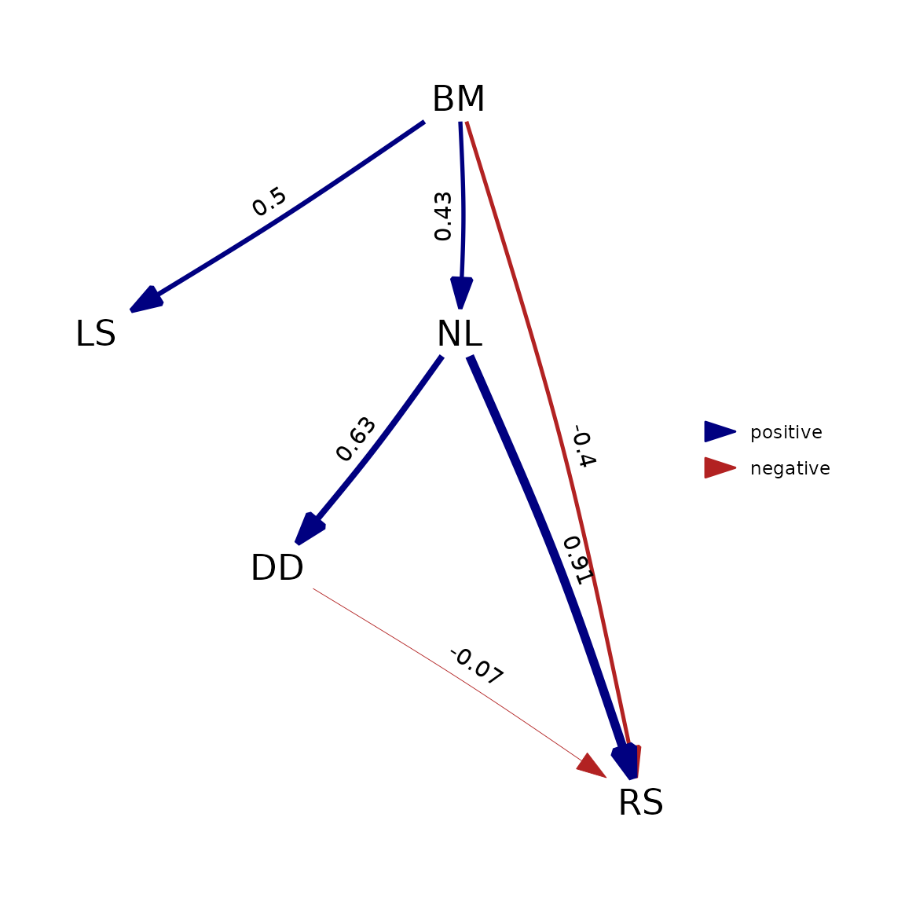
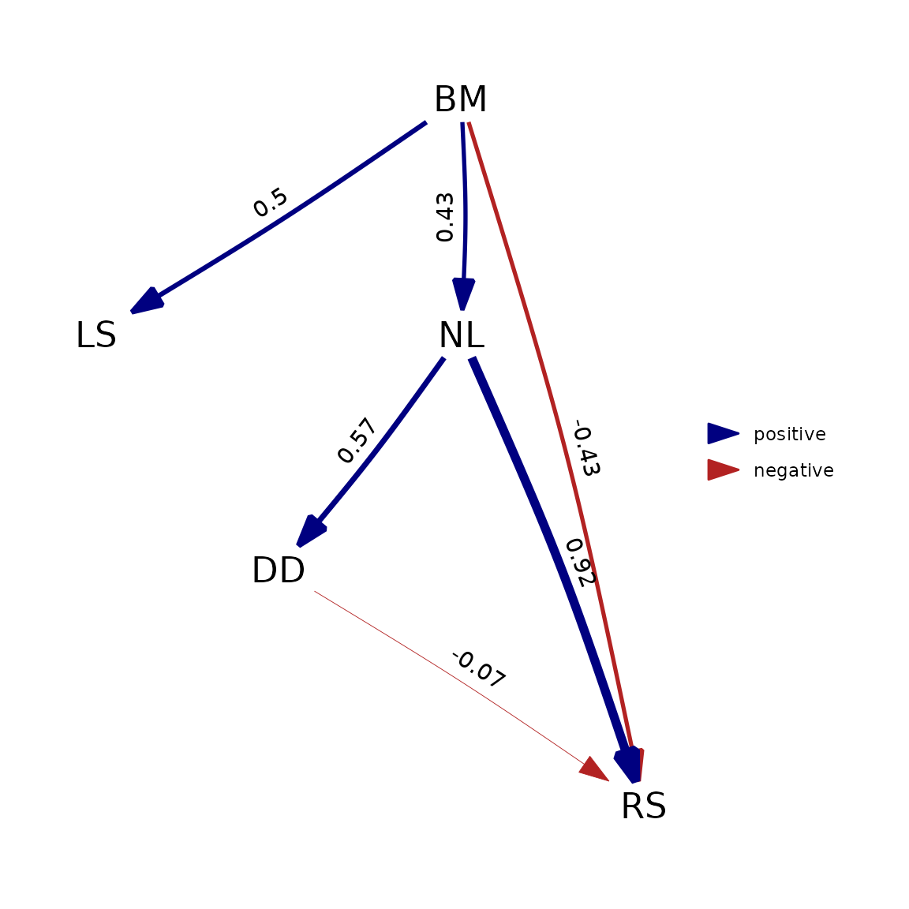

Detailed comparison with `phylopath`
Wouter van der Bijl
Source:vignettes/phylopath.Rmd
phylopath.Rmdphylopath is a package that implements phylogentic path analysis, using the d-separation methodology described by Von Hardenberg & Gonzalez-Voyer. The models that can be fit are essentially a subset of the models that can be fit using phylosem. This is a comparison between the two packages, based on the introduction vignette of phylopath, showing where the packages are similar and where they differ. This should also be useful for phylopath users, that want to do the same kinds of analysis in phylosem.
To clearly show from which package each function originates, I’ll use
the package::function notation. Make sure you have both
packages installed.
Model comparison: some important differences
Let’s start by loading the Rhinogrades example data and phylogeny.
data(rhino, rhino_tree, package = 'phylopath')When we supply the data to the model comparison functions, there is already two important differences to flag here.
Firstly, phylo_path only consciders the columns of the
data that are actually used in the models. But
compare_phylosem does not. In rhino, our first
column contains a copy of the species names, and so we need to exclude
this column (using rhino[-1]). So, when using
phylosem, make sure your data.frame contains only the variables
you’d like to inlcude in the analysis.
Secondly, to get standardized path coefficients, phylopath will standardize the data so that each variable has unit variance, but phylosem keeps data on their original scale. To make a better comparison between the packages, I’ll standardize the data manually here.
rhino_std <- rhino[-1]
rhino_std[] <- lapply(rhino_std, scale)Now we can define what causal models we want to compare. First in
phylopath, we use formulas and can use DAG()
to define a model, or define_model_set() to create a list
of models:
models_pp <- phylopath::define_model_set(
one = c(RS ~ DD),
two = c(DD ~ NL, RS ~ LS + DD),
three = c(RS ~ NL),
four = c(RS ~ BM + NL),
five = c(RS ~ BM + NL + DD),
six = c(NL ~ RS, RS ~ BM),
seven = c(NL ~ RS, RS ~ LS + BM),
eight = c(NL ~ RS),
nine = c(NL ~ RS, RS ~ LS),
.common = c(LS ~ BM, NL ~ BM, DD ~ NL)
)In phylosem, we can define the models similarly, but
need to use strings instead. Also note that we need to write out the
parameter in front of each varialble (e.g. b1,
b2, etc.). To compare multiple models, we collect all the
models in a list:
models_ps <- list(
one = 'RS = b1 * DD',
two = 'DD = b1 * NL; RS = b2 * LS + b3 * DD',
three = 'RS = b1 * NL',
four = 'RS = b * BM + b2 * NL',
five = 'RS = b1 * BM + b2 * NL + b3 * DD',
six = 'NL = b1 * RS; RS = b2 * BM',
seven = 'NL = b1 * RS; RS = b2 * LS + b3 * BM',
eight = 'NL = b1 * RS',
nine = 'NL = b1 * RS; RS = b2 * LS'
)
# we add the .common paths, by pasting them at the end of each of the model strings, e.g.:
models_ps <- lapply(
models_ps,
\(x) paste(x, c('LS = b1_ * BM; NL = b2_ * BM; DD = b3_ * NL'), sep = '; ')
)We can now run the model comparison. phylopath will use d-separation here, while phylosem is fitting each structural equation model itself.
Note that for phylo_path, we specify here that we want
the Brownian motion model ("BM"), which is the default for
compare_phylosem.
result_pp <- phylopath::phylo_path(
models_pp, data = rhino_std, tree = rhino_tree, model = 'BM'
)
library(phylosem)
result_ps <- phylosem::compare_phylosem(
models_ps, tree = rhino_tree, data = rhino_std
)How did our models perform? For phylopath we can use
summary to get a table with CICc values:
summary(result_pp)
#> model k q C p CICc delta_CICc l w
#> five five 4 11 60.7 3.39e-10 85.7 0.0 1.00e+00 1.00e+00
#> eight eight 6 9 101.9 2.22e-16 121.9 36.2 1.38e-08 1.38e-08
#> three three 6 9 111.8 0.00e+00 131.8 46.0 1.00e-10 1.00e-10
#> nine nine 5 10 110.7 0.00e+00 133.2 47.5 4.85e-11 4.85e-11
#> six six 5 10 111.0 0.00e+00 133.5 47.8 4.25e-11 4.25e-11
#> one one 6 9 113.9 0.00e+00 133.9 48.2 3.49e-11 3.49e-11
#> four four 5 10 113.7 0.00e+00 136.2 50.5 1.08e-11 1.08e-11
#> two two 5 10 115.2 0.00e+00 137.6 51.9 5.31e-12 5.31e-12
#> seven seven 4 11 114.2 0.00e+00 139.2 53.5 2.45e-12 2.45e-12For phylosem, we can extract the AIC values for each model:
sapply(result_ps, AIC) |> sort()
#> five eight four six nine two seven one
#> 1680.150 1730.808 1732.720 1732.720 1732.739 1733.104 1734.716 1735.057
#> three
#> 1736.103Even though the methodology used is quite different, we do obtain a similar result: model 5 fits much better than the other models.
However, the methods do somewhat differ in the ranking of the other models. This is largely due to the different philosophies of the two approaches. phylopath uses the PPA method as described by Von Hardenberg & Gonzalez-Voyer, which uses Shipley’s d-separation. In essence, this method finds pairs of variables that a causal model claims are independent (or conditionally independent), and then tests whether that is indeed the case. phylosem on the other hand directly evaluates the fit of the casual model to the data. So in a sense, phylosem analyzes the paths included in the model while phylopath analyzes the paths that are not included.
Another source of difference is that the CICc metric used by phylopath employs a correction for small sample sizes that the phylosem’s AIC metric does not.
In conclusion, in cases where one model clearly fits best (and under a Brownian motion model) I would expect the methods to lead to the same conclusion, but don’t expect model comparison results to match closely.
Model fitting: sometimes different
To take the best model, a particular model, or to perform model
averaging, phylopath and phylosem work largely in the
same way. Both packages have implemented the best(),
choice() and average() methods for their
respective output types.
We can get the best model (model 5) using best(). For
phylopath the paths are now fitted, for phylosem this
has already been done and the model is just extracted from the
compare_phylosem object:
To compare the two, we can convert the phylosem result in to the DAG format that phylopath uses, and use the included plot functionality:
plot(best_pp)
plot(as_fitted_DAG(best_ps))
phylopath is now actually fitting the causal model itself, not performing the d-separation procedure. Because this makes the methods much more closely aligned, we can see that the output matches very closely.
However, this will generally only hold true when assuming Brownian motion. If we deviate from that assumption by using (as an example) Pagel’s lambda model, which is the default in phylopath, this is no longer true:
phylopath::est_DAG(
models_pp$five, data = rhino_std, tree = rhino_tree, model = 'lambda'
) |> plot()
phylosem::phylosem(
models_ps$five, tree = rhino_tree, data = rhino_std, estimate_lambda = TRUE
) |> as_fitted_DAG() |> plot()
The reason this happens is that phylosem implements these
additional parameters by estimating them as a single estimated parameter
for the all variables in the model. phylopath, on the other
hand, estimates a separate lambda on the residuals of each regression
ran. For est_DAG() this means one lambda for each variable
with a modelled cause, and for phylo_path() this means one
lambda for each tested d-separation statement.